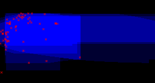

Current version: 3.0.1 alpha Developer(s): Ricardo Scachetti Pereira
Accepts categorical maps: no Needs absence points: yes
Author(s): Anderson, R. P., D. Lew, D. and A. T. Peterson.
Anderson, R. P., D. Lew, and A. T. Peterson. 2003. Evaluating predictive models of species' distributions: criteria for selecting optimal models.Ecological Modelling, v. 162, p. 211 232.
GARP is a genetic algorithm that creates ecological niche models for species. The models describe environmental conditions under which the species should be able to maintain populations. For input, GARP uses a set of point localities where the species is known to occur and a set of geographic layers representing the environmental parameters that might limit the species' capabilities to survive.
Parameters (11):
Data type: Double Domain: 0, Typical value: 0.5
Meaning: Proportion of the occurrence data to be used to train the models.
Data type: Integer Domain: 0, Typical value: 10
Meaning: Maximum number of GARP runs to be performed.
Data type: Double Domain: 0, Typical value: 100
Meaning: Maximum acceptable omission error. Set to 100% to use only soft omission.
Data type: Integer Domain: 0, Typical value: 20
Meaning: Minimum number of models below omission threshold.
Data type: Double Domain: 0, Typical value: 50
Meaning: Percentage of distribution models to be taken regarding commission error.
Data type: Integer Domain: [1, oo) Typical value: 10000
Meaning: Number of samples used to calculate commission error.
Data type: Integer Domain: 1, Typical value: 1
Meaning: Maximum number of threads of executions to run simultaneously.
Data type: Integer Domain: [1, oo) Typical value: 400
Meaning: Maximum number of iterations (generations) run by the Genetic Algorithm.
Data type: Real Domain: 0, Typical value: 0.01
Meaning: Defines the convergence value that makes the algorithm stop (before reaching MaxGenerations).
Data type: Integer Domain: 1, Typical value: 50
Meaning: Maximum number of rules to be kept in solution.
Data type: Integer Domain: 1, Typical value: 2500
Meaning: Number of points sampled (with replacement) used to test rules.
The following image shows a possible model in the environmental space (temperature x precipitation) generated with the Furcata boliviana localities dataset. It is possible to notice the overlapping of different rulesets.
|  |
| fig. 1: sample model |